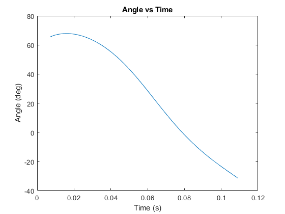
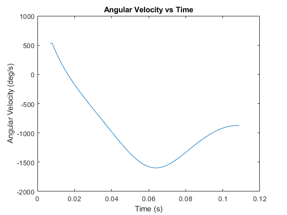
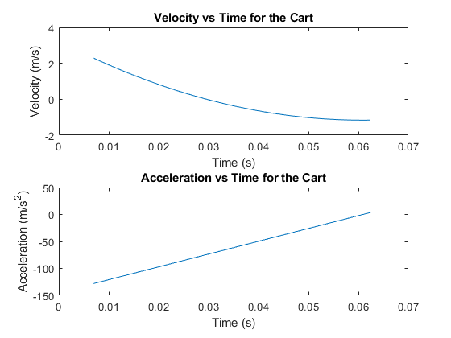

Contents
Shaggy Head Angle
clear all ;
t(1) = .233 ;
ii = 2 ;
tc = .137 / 4.567 ;
lc = .0254 / 30.4 ;
a1 = -5.849 ;
b1 = 30.28 ;
c1 = -22.19 ;
d1 = 36.08 ;
a2 = 6.829 ;
b2 = -48.88 ;
c2 = 58.34 ;
d2 = 60.15 ;
r_y(1) = a2 * t(1)^3 + b2 * t(1)^2 + c2 * t(1) + d2 ;
r_x(1) = a1 * t(1)^3 + b1 * t(1)^2 + c1 * t(1) + d1 ;
theta(1) = atand( r_y(1) / r_x(1) ) ;
while t(ii-1) < 3.6
t(ii) = t(ii-1) + .033 ;
r_y = a2 * t(ii)^3 + b2 * t(ii)^2 + c2 * t(ii) + d2 ;
r_x = a1 * t(ii)^3 + b1 * t(ii)^2 + c1 * t(ii) + d1 ;
theta(ii) = atand( r_y / r_x ) ;
ii = ii + 1 ;
end
t_c = t * tc ;
plot( t_c , theta )
title( 'Angle vs Time' )
xlabel( 'Time (s)' )
ylabel( 'Angle (deg)' )
theta_max = max(theta) ;
theta_min = min(theta) ;
delta_theta = theta_max - theta_min ;
disp( [ 'The maximum angular displacement was ' , num2str( delta_theta ) , ' degrees' ] )
The maximum angular displacement was 99.2026 degrees

Angular velocity
kk = 2 ;
while kk < ii
omega(kk) = (theta( kk ) - theta( kk - 1 )) / ( .033 * tc ) ;
kk = kk + 1 ;
end
omega(1) = omega(2) ;
figure
plot( t_c , omega )
title( 'Angular Velocity vs Time' )
ylabel( 'Angular Velocity (deg/s)' )
xlabel( 'Time (s)' )
max_omega = max( abs( omega ) ) ;
disp( [ 'The maximum angular velocity was ' , num2str( max_omega ) , ' deg/s' ] )
The maximum angular velocity was 1597.3873 deg/s

Cart velocity
ac = 12.79 ;
bc = -77.91 ;
cc = 116.4 ;
dc = 35.23 ;
jj = 2 ;
t2(1) = .233 ;
v_c(1) = ( 3 * ac * t2(1)^2 + 2 * bc * t2(1) + cc ) ;
a_c(1) = ( 6 * ac * t2(1) + 2 * bc ) ;
while t2(jj-1) + .033 < 2.1
t2(jj) = t2(jj-1) + .033 ;
v_c(jj) = ( 3 * ac * t2(jj)^2 + 2 * bc * t2(jj) + cc ) ;
a_c(jj) = ( 6 * ac * t2(jj) + 2 * bc ) ;
jj = jj + 1 ;
end
t2_c = t2 * tc ;
v_cc = v_c * ( lc / tc ) ;
a_cc = a_c * ( lc / tc^2 ) ;
figure
subplot( 2 , 1 , 1 )
plot( t2_c , v_cc )
title( 'Velocity vs Time for the Cart' )
xlabel( 'Time (s)' )
ylabel( 'Velocity (m/s)' )
subplot( 2 , 1 , 2 ) , plot( t2_c , a_cc )
title( 'Acceleration vs Time for the Cart' )
xlabel( 'Time (s)' )
ylabel( 'Acceleration (m/s^2)' )
v_initial = v_cc(1) ;
v_final = v_cc(jj-1) ;
disp( [ 'The velocity before the collision was ' , num2str( v_initial ) , ' m/s' ] );
disp( [ 'The velocity after the collision was ' , num2str( v_final ) , ' m/s' ] );
a_max = max( abs( a_cc ) ) ;
disp( [ 'The maximum acceleration was ' , num2str( a_max ) , ' m/s^2' ] )
The velocity before the collision was 2.2889 m/s
The velocity after the collision was -1.1614 m/s
The maximum acceleration was 128.0766 m/s^2
